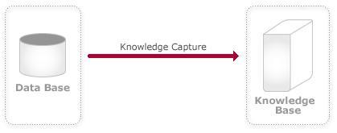
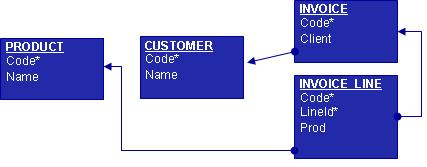
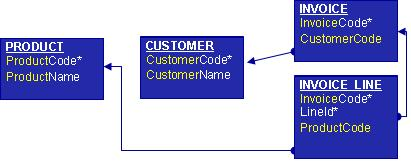
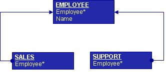
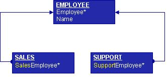

OverviewReverse engineering is a broad term, but in this scenario it refers to the process of reading the structure of database tables and their relationships, and defining the necessary GeneXus Objects (data model) to represent the schema. 
Reverse EngineeringGeneXus' basic secret is the URA attribute naming convention. Most Databases do not use this attribute naming convention. The key objective of this process is to convert your Database schema to a URA based schema. Reverse engineering a non-URA major input affects the referential integrity constraints defined in the schema. Although you can use this tool even if you have not defined the database referential integrity, it is better to use it when the referential integrity is defined. What Does a Reverse Engineered Knowledge Base Have?A GeneXus Transaction is created for each database table that has the same attributes. Based on the constraints defined in the tables, the actual "GeneXus name" attribute may be different from the original. DBRET could change the internal attribute name to enforce the URA concept. Let us see some examples. Invoice.Client --> Customer.Code InvoiceLine.Code --> Invoice.Code InvoiceLine.Prod --> Product.Code  After DBRET processes the schema, the following GeneXus Transaction and Tables are created: 
As you can see, some attribute names have changed. Now you don't only have a "Name" attribute, you have, for example, a "ProductName", which gives you context information and will enable you to program new objects without worrying about how to join tables. 
DBRET will define the internal tables as follows: 
The following subtype groups will be also defined to maintain the relationship between tables: SALES GROUP SalesEmployee subtype of Employee SUPPORT GROUP SupportEmployee subtype of Employee The third GeneXus object created by the DBRET during this process is the Data View This object contains all the internal-table-to-external-table mapping information. As we saw above, some internal attribute names have changed. Data Views define, among other things, the mapping between Genexus and your database schema. The internal names are used in GeneXus objects, but the generated programs will use the external ones. See also: Database Reverse Engineering Wizard
|
| Backlinks | |
| Category:Database Reverse Engineering | Database Reverse Engineering Wizard |